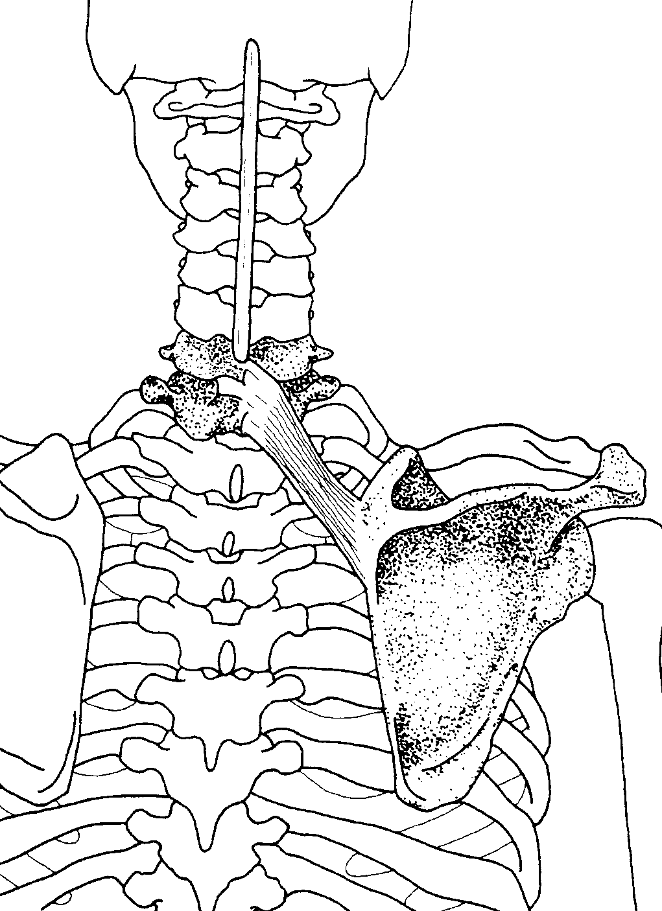

C. R. for the eractor spinaes
C. R. for the eractor spinaes
Clinical relevance for each muscle connected to the back
Obliquus internus abdominis
Origin: lateral half of inguinal ligament, iliac crest, thoracolumbar fascia
Insertion: cartilage of bottom three or fouur ribs, abdominal aponeurosis to linea alba
Action: compresses abdominal contents, laterally flexes and rotates vertebral column
Nerve: eight to twelfth intercostal, iliohypogastric, ilioinguinal nerves
Obliquus externus abdominis
Origin: lower eight ribs
Insertion: anterior part of iliac crest.. abdominal aponeourosis to linea alba
Action: compresses abdominal contents, laterlly flexes and rotates vertebral column
Nerve: eight to twelfth intercostal, iliohypogastric, ilioinguinal nerves
Latissimus dorsi
Origin: spinous processes of the lower six thoracic vertebrae, lumbar vertebrae, sacral vertebrae, supraspinal ligament, and posterior part of the iliac crest through the lumbar (thoracplumbar) fascia, lower three or four ribs, inferior angle of the scapula
Insertion: bottom of intertubercular (bicipital groove
Action: extends, adducts, and medially rotates the arm, draws the shoulder downward and backward, keeps inferior angle of scapula against the chest wall, accessory muscle of respiration
Nerve: thoracodorsal nerve(c6-c8)

Teres major
Origin: lower third of the posterior surface of the lateral border of the scapulla, near the inferior angle
Insertion: medial lip of the intertubercular (bicipital groove of the humerus
Action: medially rotates arm, adducts arm, extends arm
Nerve: lower subscapular nerve (c5,c6)

Teres minor
Origin: upper two-thirds of the dorsal surface of the axillary border of the scapula
Insertion: the capsule of the shoulder joint, the lower facet of the greater tuberosity of the humerus
Action: laterally rotates arm, weakly adducts arm, draws humerus toward glednoid fossa
Nerve: axillaty nerve (c5)

Infraspinatus
Origin: infraspinous fossa of the scapula
Insertion: middle facet of the greater tuberosity of the humerus, capsule of the shoulder joint
Action: draws humerus toward glenoid fossa, thus resisting posterior dislocation of arm, as in crawling; laterall rotates; abducts arm
Nerve: suprascapular nerve (c5,c6)
Deltoid
Origin: anterior position-anterior border and superior surface of the lateral third of the clavicle; middle portion-lateral border of the acromion process; posterior portion-extends and laterally rotates arm
Insertion: deltoid tuberosity, on the middle of the lateral surface of the shaft of the humerus
Action: anterior portion-flexes and medially rotates arm; middle portion-abducts arm; pposterior portion-extends and laterally rotates arm
Nerve: axillary nerve (c5,c6)
Trapezius
Origin: medial third of superior nuchal line, external occipital protuberance, ligamentum nuchae, spinous processes and supraspinous ligaments of seventh cervical and all thoracic vertebrae
Insertion: upper part-lateral third of clavicle; middle part-actomion and crest of spine of scapula; lower part-medial portion of crest of spine of scapula (tubercle)
Action: upper part elevates scapula, middle part retracts (adducts) scapula, lower part depresses scapula, upper and lower parts together rotate scapula (important in elevating arm)
Nerve: accessory (eleventh cranial), c3,c4
Splenius capitis
Origin: lower part of ligamentum nuchae, spinous processes of seventh cervical vertabra (c7) and upper thre or four thoracic vertabrae (t1-t4)
Insertion: mastoid process of temporal bone and lateral part of superior nuchal line
Action: actingi together, they extend hyperextend head and neck, acting on one side, theu laterally flex, rotate head and neck
Nerve: lateral branches of dorsal primary divisiion of middle and lower cervical nerves
Splenius cervicis
Origin: spinous process of third through sixth thoracic vertabrae (t3-t6)
Insertion: transverse processes of uper two or three cervical vertebrae (c1-c3)
Action: acting together, they extend, hyperextend head and neck, acting on one side, they laterally flex, rotate had and neck
Nerve: lateral branches of dorsal primary divisions of middle and lower cervical nerves

Levator scapulae
Origin: posterior tubercles of the transverse processes of the first four cervical vertebrae
Insertion: vertebral (medial) border of the scapula at and above the spine
Action: elevates medial border of scapula, rotates scapula to lower rthe lateral angle, acts with trapezius and rhomboids to pull scapula mediially and upward, bends neck laterally
Nerve: dorsal scapular nerve
Supraspinatus
Origin: supraspinous fossa of scapula
Insertion: upper part of the greater tuberosity of the humerus, capsule of the shoulder joint
Action: aids deltoid in avduction of arm; draws humerus toward glenoid fossa, preventing deltoid from forcing huumerus up against acromion; weakly flexes arm
Nerve: suprascapular nerve(c5)

Rhomboid minor
Origin: spines of the seventh cervical and first thoracic vertebrae, lower part of the ligamentum nucahe
Insertion: medial border of the scapula at the root of the spine
Action: retracts and stabilizes scapula, elevates the medial border of the scapula, rotates the scapula to depress the lateral angle (assists in adduction of arm)
Nerve: dorsal scapular nerve (c5)
Serratus posterior suprior
Origin: ligamentum nuchae, spinous processes of seventh cervical and first few thoracic vertebrae
Insertion: upper borders of the second through fifth tibs lateral to their angles
Action: raises ribs in inspiration
Nerve: t1-t4

Rhomboid major
Origin: spines of the second to fifth thoracic vertebrae, supraspinous ligament
Insertion: medial border of the scapula below the spine
Action: retracts and stabilizes scapula, elevates the medial vorder of the scapula causing downward rotation, assists in adduction of arm
Nerve: dorsal scapular nerve (c5)
Serratus anterior
Origin: outer surfaces and superior borders of first eight or nine ribs, and fascia covering first intercostal space
Insertion: anterior surface (costal surface of the medial border of the scapula)
Action: rotates scapula for avduction and flexion of arm, protracts scapula
Nerve: long thoracic nerve (c5-c7)
Serratus posterior inferior
Origin: spinous processes of the lower two thoracic and the upper two or three lumbar vertebrae
Insertion: lower borders of bootom fourrr ribs
Action: pulls ribs down, resisting pull of diaphragm
Nerve: t9-t12
Gluteous maximus
Origin: outer surface of ilium behin posterior gluteal line, adjacent posterior surface of sacrum and coccyx, sacrotuberous ligament, aponeourosis of erector spinae (sacrospinalis)
Insertion: iliotibial tract of fascia lata, gluteal tuberosity of femur
Action: upper part-abducts, laterally rotates thigh; lower part-extends, laterally rotates thigh, extends trunk, assists in adduction of thigh
Nerve: inferior gluteal nerve (l5,s1,s2)
Clinical relevance for the the Eractor spinaes

|
Iliocostalis cervicis
Origin: angles of third through sixth rib
Insertion: transverse processes of fourthe, fifth, and sixth cervical vertabrae
Action: extension, lateral flexion of vertabral colum
Nerve: dorsal primary division of spinal nerves
Iliocostalis thoracis
Origin: angles of lower six ribs medial to iliocostalis lumborm
Insertion: angles of upper six ribs and transverse process of seventh cervical vertebral colum, rotates ribs for forceful inspiration
Action: extension, lateral flexion of vertabral colum, rotates ribs for forceful inspiration
Nerve: dorsal primary division of spinal nerves
Iliocostalis lumborum
Origin: medial and lateral sacral crests and medial part of iliac crests
Insertion: angles of lower six ribs
Action: extension, lateral flexion of vertebral column, rotates ribs for forceful inspiration
Nerve: dorsal primary divisions of spinal nerves
|
Erector spinae (Iliocostalis) |
|
|
Longissimus capitis
Origin: transverse processes of upper five thoracic vertabrae (t1-t5), articular processes of lower three cervical vertabrae (c5-c7)
Insertion: posterior part of mastoid process of temporal bone
Action: extends and rotates head
Nerve: dorasal primary divisions of middle and lower cervical
Longissimus cervicis
Origin: transverse processes of upper four and five thoracic vertabrae (t1-t5)
Insertion: transverse processes of second through sixth cervical vertabrae
Action: extension, lateral flexion of vertabrae column
Nerve: dorsal primary divisions of spinal nerves
Iliocostalis thoracis
Origin: medial and lateral scaral crests, spinous processes and suprasipnal ligament of lumbar and eleventh and twelfth thoracic vertabrae, and medial part of lilac crests
Insertion: transverse rocesses of all tjeoracic vertavrae, between tubercles and angles of lower nine or ten ribs
Action: extions, lateral flexion of vertabral column, rotates ribs for forceful inspirations
Nerve: dorsal primary divisions of spinal nerves]
|
Eractor spinae (Longissimus) |
|
|
Spinalis cervicis
Origin: spinous process of upper lumbar and lower thoracic vertebrae. Cervicis: nuchal ligament and spinous process of C7
Insertion: spinous process of upper thoracic vertebrae. Cervicis: Spinous process of cervical vertebrae except atlas
Action: extends vertebral column
Nerve: dorsal primary division of spinal nerves
Spinalis thoracis
Origin: ligamentum nuchae, spinous process of seventh cervical vertebra
Insertion: spinous process of axis
Action: extends vertabral column
Nerve: dorsal primary divisions of spinal nerves
Spinalis thoracis
Origin: spinous processes of lower two thoracic (t11, t12) and upper two
Insertion: spinous
Action: extends and rotates vertabal column
Nerve: dorsal primary divisions of spinal nerves
|
Eractor spinae (Longissimus) |
|
|
Iliocostalis cervicis
Origin:transverse process of lower four cervical (c4-c7) and upper six or seven thoracic (t1-t7) vertebrae
Insertion: between superior and inferior nuchal lines of occipital bone
Action: extends and rotates head
Nerve: dorsal primary divisions of spinalis nerves
Iliocostalis thoracis
Origin: transverse processes of upper five or six thoracic vertabrae (t1-t6)
Insertion: spinous processes of second to fifth cervical vertabrae (c2-c5)
Action: extends and totates vertebral column
Nerve: dorsal primary divisions of spinal nerve
Iliocostalis lumborum
Origin: transverse processes of sthix through tenth thoracic vertabrae (t6-t10)
Insertion: spinous processes of the lower two cervical (c6,c7) and upper four thoracic (t1-t4) vertabrae
Action: extends and rotates vertebral coumn
Nerve: dorsal primary divisions of spinal nerves
|
Transversospinalis |